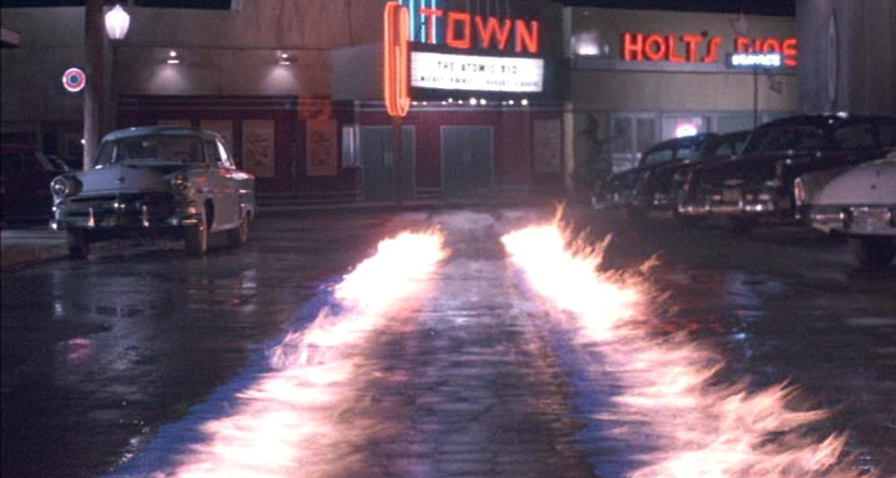
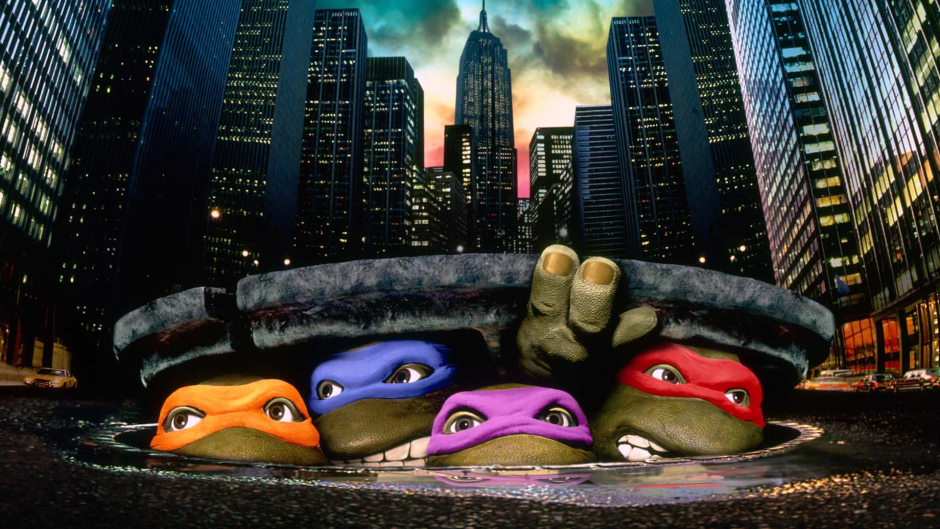
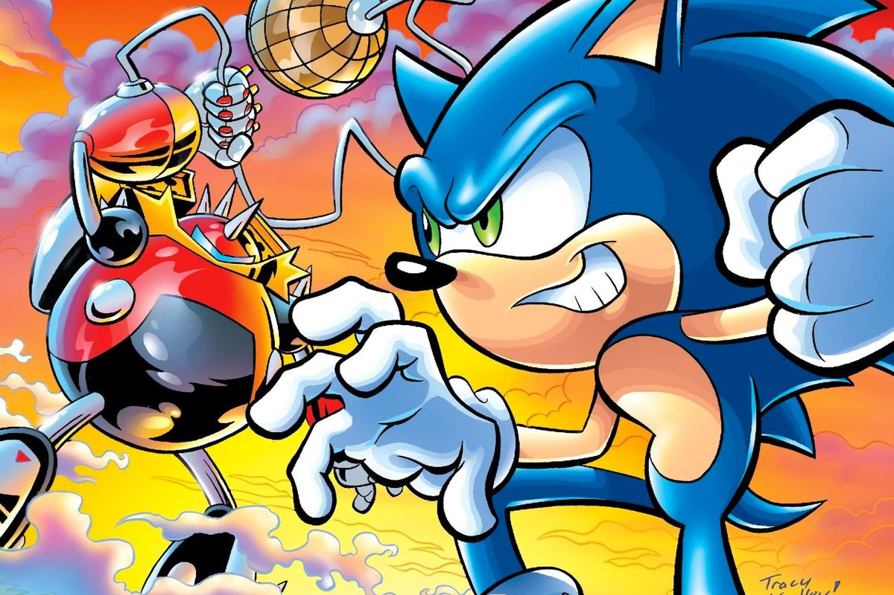
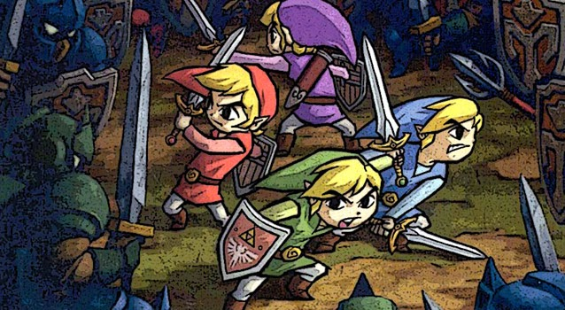
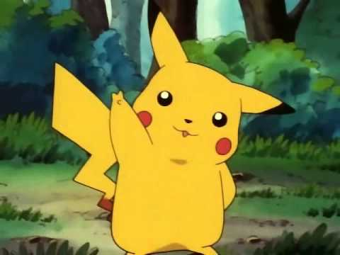

CAR MYSTERIOUSLY DISAPPEARS
The Delorean time machine is a fictional automobile-based time travel device featured in the Back to the Future franchise. In the feature film series, Dr. Emmett Brown builds a time machine based on a DeLorean DMC-12 car, to gain insights into history and the future. Instead, he ends up using it to travel over 30 years of Hill Valley history (from 1985 to 2015) with Marty McFly to change the past for the better and to undo the negative effects of time travel. One of the cars used in filming is on display at Universal Studios Hollywood and the official Back to the Future DeLorean can be viewed at the Petersen Automotive Museum.
It was SO fast! I don't even know what I saw!
The flux capacitor, which consists of a rectangular-shaped compartment with three flashing Geissler-style tubes arranged in a "Y" configuration, is described by Doc as "what makes time travel possible." The device is the core component of the time machine.

TURTLES SPOTTED IN THE SEWERS
As a crime wave rises in New York City, reporter April O'Neil covers the mysterious ninja Foot Clan. The Shredder, the Foot leader, orders April silenced. She is attacked by the Foot in a subway and knocked unconscious. Raphael, one of the Teenage Mutant Ninja Turtles, emerges from the shadows, defeats the Foot, and carries her to the turtles' hideout, unaware that one of the Foot is following him. Splinter, their rat master, explains to April that he and the turtles were once ordinary animals, but were mutated into intelligent creatures by toxic waste. After the turtles escort April home, they find their hideout ransacked and Splinter kidnapped. They return to April's apartment and spend the night there.
The turtles engage the Foot in battle, but the Shredder defeats them. As the Shredder prepares to kill Leonardo, Splinter appears and challenges him to a fight. Splinter names Shredder as Oroku Saki; Saki removes his mask and touches his scar, remembering how Splinter gave it to him. He charges Splinter, who ensnares the Shredder's yari with Michelangelo's nunchaku, leaving him dangling over the roof's edge. Shredder throws a knife from his belt, but when Splinter reaches to catch it, his grip is released and Saki falls into a garbage truck. Casey pulls the lever "accidentally" to activate the compactor, crushing the Shredder. As the police arrive and arrest the foot soldiers, the teens tell them where the stolen goods are. Reunited with Splinter, the turtles watch as April and Casey kiss.

HEADGEHOG BREAKS SOUND BARRIOR
Sonic the Hedgehog is a media franchise created and produced by Sega. It is primarily a video game franchise, centering on a series of speed-based platform games. Sonic, the protagonist, is an anthropomorphic blue hedgehog with supersonic speed. Typically, Sonic—usually along with some of his friends, such as Tails, Amy, and Knuckles—must stop antagonist Doctor Eggman's plans for world domination.
While the first Sonic games were side-scrolling platform games, later games expanded into other genres, such as Mario & Sonic at the Olympic Games. The series and its spin-offs had sold over 89 million physical copies by March 2011, and grossed over $5 billion by 2014. As of 2018, the series has shifted 800 million units, including free-to-play mobile game downloads. The franchise has also been spun out into other media, including cartoons, anime, and a comic book series recognized as the longest running based on a video game by Guinness World Records.

BOY SPLITS INTO FOUR
Taking place a century after Twilight Princess, the game begins with the land of Hyrule in a state of fear because of strange happenings that have occurred recently. On a stormy night, Princess Zelda and the shrine maidens fear that the reason for these events is that Vaati's seal is weakening. She summons Link and brings him to the castle so he can protect her and the other maidens while they open the portal to the Four Sword Sanctuary. When they do, however, a shadowy figure appears, Shadow Link, who then kidnaps the maidens of the Shrines and seals them inside their crystals. Link follows him to the mysterious sanctuary where the Four Sword lies in the pedestal, keeping the great evil sealed away. Link pulls the Four Sword out of its Pedestal, splitting into three clones of himself to destroy his doppelgänger. However, the seal that imprisoned the Sorcerer of Winds, Vaati, was broken and had released him from his prison once again.
I am an official scientist and this is my scientific opinion! BLAH! It'sssss IMPOSSIBLE! IMPOSSIBLE I TELL YOU! And monkey's are a REAL scientists' pet, Emmet!
The four Links eventually save the shrine maidens, retrieve the Dark Mirror with the assistance of Princess Zelda, stopping Shadow Link from respawning once and for all. The four heroes then head forth to the Palace of Winds and defeat Vaati, leading them into their final battle with Ganon. Trying to stop him from plunging the world into chaos, the four Links use the Power of the Maidens of Shrines, Including Zelda, to defeat Ganon, penetrating him. After penetrating Ganon, the four Links firmly seal him inside the Four Sword, bringing chaos and horror to an end. Peace returns to Hyrule, the souls of the knights are freed from their torment, and the people celebrate as all traces of evil that plagued Hyrule are vanquished. With Ganon defeated and sealed inside, Link returns the Four Sword that sealed darkness away back to its resting pedestal and the four Links become one again. After the battle, The Maidens of the Shrine use their powers and create a barrier, which is strong enough for the Four Sword to rest before the six maidens leave. Thus, Link's journey has ended and both he and Zelda leave the Sanctuary as Darkness fades away and Light endures in the Land of Hyrule, bringing peace and prosperity.

NEW PET: LIGHTNING MOUSE
Pikachu are a species of Pokémon, fictional creatures that appear in an assortment of video games, animated television shows and movies, trading card games, and comic books licensed by The Pokémon Company, a Japanese corporation. They are yellow rodent-like creatures with powerful electrical abilities. In most vocalized appearances, including the anime and certain video games, they are primarily voiced by Ikue Otani.
My son loves this electric rodent. I, of course, prefer good ol' Einsten, my dog. <3
Like other species of Pokémon, Pikachu are often captured and groomed by humans to fight other Pokémon for sport. Pikachu are one of the most well-known varieties of Pokémon, largely because Pikachu is a central character in the Pokémon anime series. Pikachu is regarded as a major character of the Pokémon franchise as well as its mascot, and has become an icon of Japanese pop culture in recent years. It is also seen as one of the major mascots for Nintendo.
